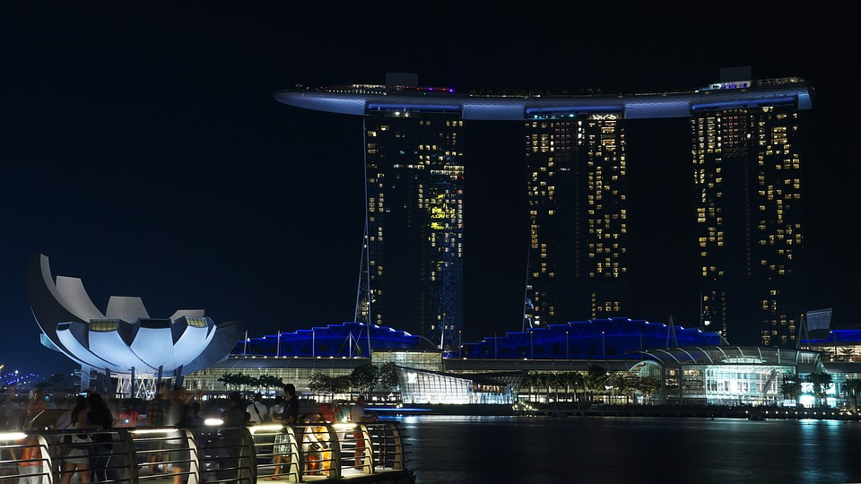

<
IEEE ISORC 2018

ABOUT ISORC
Organising committee
Program committee
Contact information
ISORC 2017
CFP
HTML
PDF
PROGRAM
REGISTRATION
VENUE
Conference location
Hotel at NTU
Getting to NTU
CONTACT
IEEE ISORC 2018 PROGRAM
To be announced at a later date